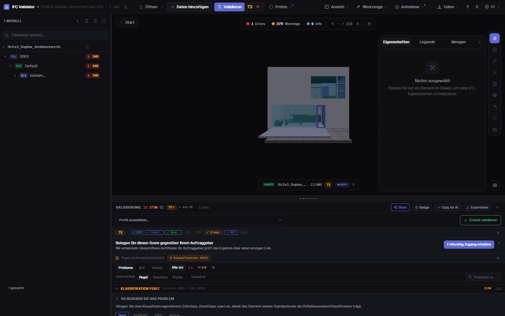
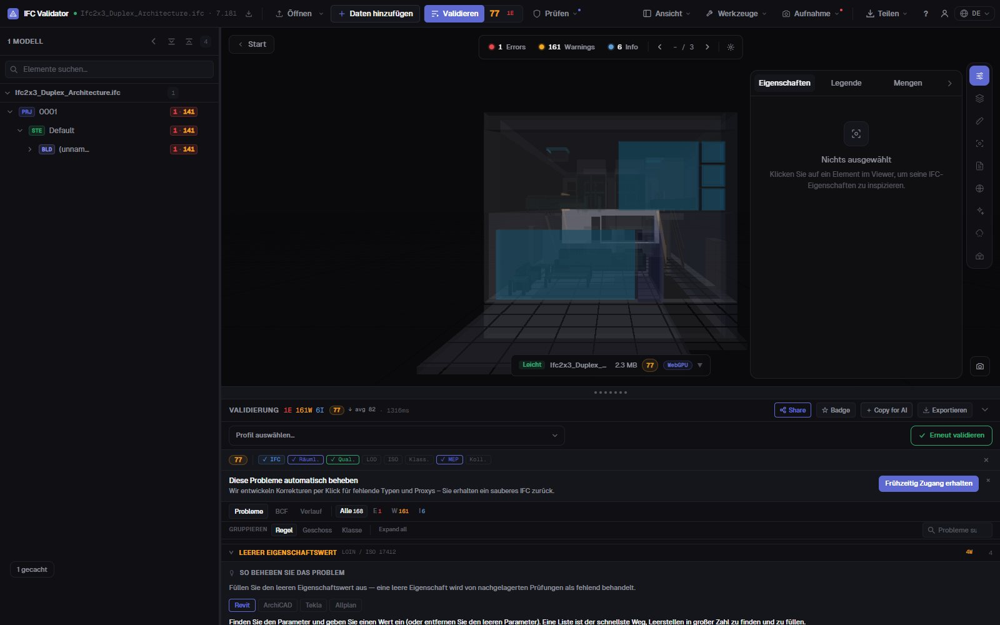

IFC-Klassifikation prüfen
Uniclass, OmniClass, Psets
Finden Sie jedes Element eines IFC ohne Klassifikationsreferenz — aus jedem System oder nur aus denen, die Ihr BIM-Abwicklungsplan verlangt — dazu fehlende Eigenschaftssätze, leere Werte und Namen, die Ihre Namenskonvention verletzen. Jeder Befund wird aufgelistet, gezählt und in 3D gezeigt.
Klassifikation prüfen — kostenlos →Ohne Konto · Kein Upload · Läuft im Browser · Kostenlos

Was Sie tun können
Klassifikations- und Datenprüfung für eine Übergabe
Was eine BIM-Koordination prüft, bevor ein Modell in die CDE darf.
Fehlende Klassifikation
Jedes physische Element ohne IfcClassificationReference, aus jedem System oder nur aus den angegebenen (Uniclass 2015, OmniClass, CCS, NL-SfB…).
Klassifikation per IDS
Eine buildingSMART-IDS-Datei laden, um System und Code je Elementtyp zu verlangen; die IDS-Klassifikationsfacette wird vollständig unterstützt.
Eigenschaftssätze prüfen
Fehlende Pflicht-Psets und Eigenschaften mit leeren Werten, je Elementklasse.
Namenskonvention
Namen gegen die Muster Ihres BAP prüfen, dazu leere und doppelte Namen (im Block umbenennbar).
In 3D sichtbar
Die fehlerhaften Elemente jeder Prüfung im Modell isolieren, den Rest transparent, und zu jedem springen.
Exportierbar
Befunde als BCF an den Autor senden oder als CSV, JSON-Bericht oder druckbaren Übergabebericht herunterladen.
Screenshots

FAQ
Häufige Fragen
Wie prüfe ich die Klassifikation eines IFC-Modells?
IFC in IFC Viewer Online öffnen und mit aktiver Klassifikationsregel prüfen (die Profile ISO 19650 und Koordination enthalten sie). Jedes Element ohne Klassifikationsreferenz wird aufgelistet und in 3D gezeigt. Für ein bestimmtes System und einen Code je Elementtyp eine IDS-Datei laden.
Welche Klassifikationssysteme werden unterstützt?
Jedes als IfcClassification / IfcClassificationReference gespeicherte System: Uniclass 2015, OmniClass, CCS, NL-SfB, CoClass, MasterFormat oder ein eigenes. Sie können jedes System akzeptieren oder nur die angegebenen.
Werden auch Eigenschaftssätze geprüft?
Ja. Regeln melden fehlende Pflicht-Psets und leere Werte, und eine IDS-Datei kann bestimmte Eigenschaften, Datentypen und Werte verlangen.
Wird das Modell hochgeladen?
Nein. Die Prüfung läuft im Browser per WebAssembly; das IFC verlässt Ihren Rechner nicht. Kostenlos für jede Nutzung, ohne Konto.
Kann ich die Ergebnisse mit dem Modellautor teilen?
Ja: als BCF 2.1 für sein Autorenwerkzeug, als CSV oder JSON oder als druckbaren Übergabebericht exportieren.
Wissen, was unklassifiziert ist, bevor das Modell in die CDE kommt.
Klassifikation · Psets · Namen · IDS · BCF
Klassifikation prüfen — kostenlos →